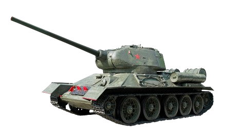

War Machines |
|---|
| Repülők | Tankok |
|---|
| Tankok | ||||||
|---|---|---|---|---|---|---|
| Különlegesebb tipusai | ||||||
| Név | Kép | Gyártási éve | Bevetési éve | Kik vetették be | Néhány szakmai adat | |
| T-34 |  | 1940 | 1941-1945 | Tömege: 35tonna Személyzet: 4-5 fő Elsődleges fegyverzet: 76,2mm-es F-34, 57mm-es ZISZ-4 L-11 Típusú harckocsiágyú Másodlagos fegyverzet: 2db 7,62mm-es DT géppuska Teljesítmény: 500Le (12 hengeres, 38 literes vízhűtéses dízelmotor) Max sebesség: úton 54km/h terepen 25km/h Páncélzat: 45mm acél,titán. |
||
| Challenger 2 | 1993 | 1998 | Tömege: 62.5tonna Személyzet: 4 fő Elsődleges fegyverzet: 120mm L30A1 ágyú Másodlagos fegyverzet: 7.62 mm L94A1 EX-34 géppuska 7.62 mm L37A2 légvédelmi géppuska Teljesítmény: 1200Le (Perskins 12 hengeres dízelmotor) Max sebesség: 59km/h Páncélzat: Chobham |
|||
| M1 Abrams | 1985 | 1988 | Tömege: 63tonna Személyzet: 4 fő Elsődleges fegyverzet: 120 mm-es M256 sima csövű ágyú Másodlagos fegyverzet: 12,7 mm-es M2 hátrafelé tüzelő géppuska 7,62 mm-es M240 légvédelmi géppuska 7,62 mm-es M240 lövegcsővel párhuzamosított géppuska Teljesítmény: 1500Le (AGT–1500 gázturbina) Max sebesség: 72km/h Páncélzat: 610 mm vastag hengerelt homogén páncéllemezzel |
|||
| Leopard 2A7+ | 1970 | 1973 |  |
Tömege: 62tonna Személyzet:4 fő Elsődleges fegyverzet: Rheinmetall 120 mm-es L/55 űrmérethosszú sima csövű ágyú Másodlagos fegyverzet: 2×7,62 mm MG3 géppuska Teljesítmény: 1500Le (12 hengeres mindenevő dízelmotor) Max sebesség: 68-72km/h Páncélzat: Chobham kompozit páncélzat |
||
| Panzerkampfwagen VIII Maus | 1941 | 1943 | |
Tömege: 188tonna Személyzet: 6 fő Elsődleges fegyverzet: 12,8 cm-es KwK 44 L/38-as löveg Másodlagos fegyverzet: 75mm,főágyúval párhuzamosított löveg 2×7.92 mm MG34 Teljesítmény: 1200Le (Daimler-Benz MB 509-es V12 hengeres, benzines) Max sebesség: úton 20 km/óra Páncélzat: 350 mm |
||